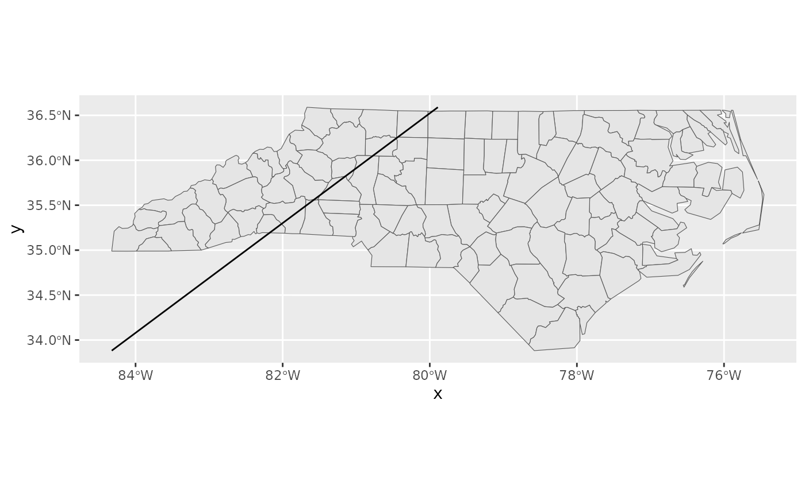

Create a layer with an arrow or segment from and to specified locations
Source:R/layer_arrow.R
layer_arrow.RdA wrapper for ggplot2::geom_segment, ggplot2::geom_curve(),
ggarchery::geom_arrowsegment(), ggforce::geom_diagonal0(),
ggforce::geom_link() that makes it easier to specify the start and end of
the segment using any object supported by the sfext::as_xy() function.
Arguments
- mapping
aesthetic mapping overwritten with x, y, xend, and yend values based on provided from and to parameters.
- data
Required if from or to are character vectors to
sfext::as_xy()- crs
A character or numeric reference to a coordinate reference system supported by
sf::st_crs()or anothersf,sfc, orbboxobject that is used to provide crs.- from, to
Required. Passed to x parameter of
sfext::as_xy()(usingnm = c("xend", "yend")) for the to parameter.- geom
Character string for geom to use c("segment", "curve", "arrowsegment", "diagonal0", "link") or a geom function.
- ...
Additional parameters passed to function specified by geom paramter.
Examples
library(ggplot2)
nc <- sf::read_sf(system.file("shape/nc.shp", package = "sf"))
nc_map <- ggplot(data = nc) +
geom_sf()
nc_map +
layer_arrow(
data = nc,
from = c("xmin", "ymin"),
to = c("xmid", "ymax"),
)

nc_map +
layer_arrow(
data = nc,
from = c("xmin", "ymin"),
to = c("xmid", "ymax"),
geom = "curve",
curvature = 0.25
)
nc_map +
layer_arrow(
data = nc,
from = c("xmax", "ymin"),
to = c("xmid", "ymax"),
geom = "arrowsegment"
)